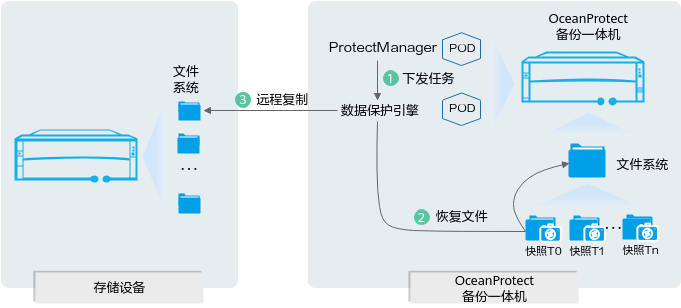
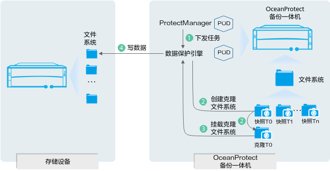

当NAS文件系统/NAS共享数据丢失或您需要还原某个副本数据给其他NAS文件系统/NAS共享时，可以通过恢复操作来实现。
恢复业务流程
- 恢复文件系统到原位置
图1 恢复业务流（恢复文件系统到原位置）

- 用户在OceanProtect管理界面下发并调度NAS文件备份副本恢复任务，并将恢复任务发送到数据保护引擎。
- 数据保护代理在文件系统中找到目标副本，将副本数据恢复到文件系统中。
- 数据保护代理通过远程复制，将文件系统中的数据同步到原位置实现原位置恢复。
- 其他恢复方式
图2 恢复业务流（其他恢复方式）

- 用户在OceanProtect管理界面下发并调度NAS文件备份副本恢复任务，并将恢复任务发送到数据保护引擎。
- 数据保护引擎基于恢复目标副本，创建克隆文件系统。
- 数据保护引擎在OceanProtectOS中挂载克隆文件系统，通过NFS/CIFS协议读取待恢复文件。
- 数据保护引擎通过NFS/CIFS协议挂载待恢复目标文件系统，将数据写入到待恢复目标文件系统中，最后删除克隆文件系统，恢复完成。